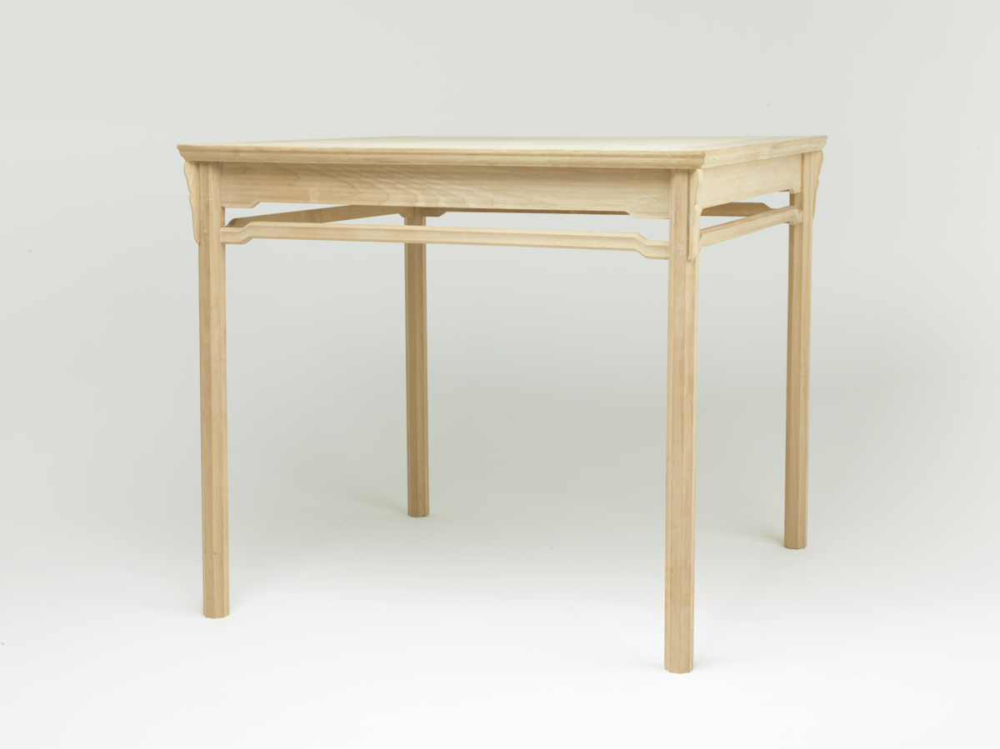
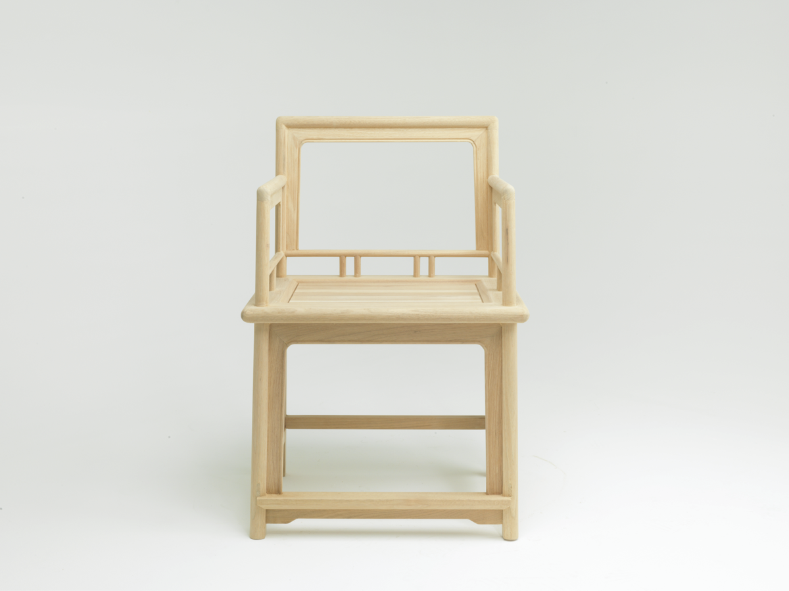

Funiture Design-Ming style furniture restoration
明式家具设计与制作
Team Member: Liu / Zhao / Shen / Han / Yao / Me
Compelete Date: 2014-2016
Brief
中式家具在世界家具设计中有着举足轻重的地位，它凝聚了古代匠人的智慧，展现了中华民族的独特的雅致与品味，在漫长的历史长河中，明式家具以其简约造型
尤其受到大众喜爱，作为中国的物质文化遗产，我在大学期间参与了“明式家具数字化保护”这个项目，目的在于借助现代数字化技术手段，对明式家具传统技艺进行数字化的收集与复原，同时探索现代机器设备在传统家具制造中的使用。
成果：王世襄先生的《明式家具珍赏》中明式家具十六品的第十一品：劲挺--黄花梨一腿三牙罗锅枨方桌、第十六品：清新--明黄花梨六方扶
手椅以及一把练习用的玫瑰椅
research
在项目初期，我们深入到南方一些拥有明式家具的博物馆与村落中进行实地的家具调研与数据采集，然后带着数据向专业生产红木家具的工厂 老师傅请教榫卯结构与加工工艺方法，利用3D Scanner对一些关键节点进行扫描与数据收集，最后结合现代化的数字建模技术与数控加工 工艺，对家具进行了一比一的复原设计
Prcocess

清新：明黄花梨六方扶手椅
六方椅是南官帽椅的变体，线脚复杂，六足外面起丝瓜棱线，椅盘边抹采用双混面压边线，管脚枨起“芝麻梗”。其余构件如后退上部、扶手、搭脑、鹅脖、 联帮棍等都采用甜瓜棱。如此起线造型，完全着意在因六足而出现的“呆笨”形体上。另外，靠着攒框打槽分三段装板。上段雕饰如意云纹，中段的三分之一 部位，略高于举手之上，引人注目而格外突出，此椅造型线脚处理的大胆意匠取得卓越的效果，是明代家具中一件不落窠臼、悦目清新的优秀作品，由于其 为六方形，扶手外撇，显得端庄大气，此椅为四件一堂，通常用于正厅两厢对称陈设


劲挺：黄花梨一腿三牙罗锅枨方桌
“一腿三牙罗锅枨”是明式方桌中的一种常见形式。所谓“一腿三牙”是指四条腿中的任何一条都和三个牙子相交。三个牙子即两侧的两根长牙条和桌角的一块牙 头，所谓“罗锅枨”即安在长牙条下面的枨子，不过此桌虽属此式，四足直立，不用侧脚，此例权衡，花纹线脚也与一般常见的不同，其风格也别具一格。

玫瑰椅
玫瑰椅是明代扶手椅中常见的形式，其特点是靠背、扶手和椅面垂直相交，尺寸不大，用材较细，故予人一种轻便灵巧的感觉。
Exhibition
北京国际设计周——“中国-葡萄牙设计牵手”主题展览 歌华大厦 北京 2016/10